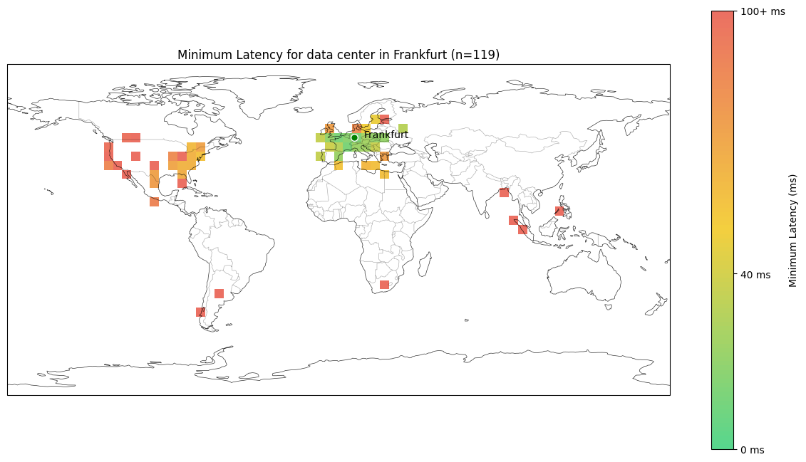
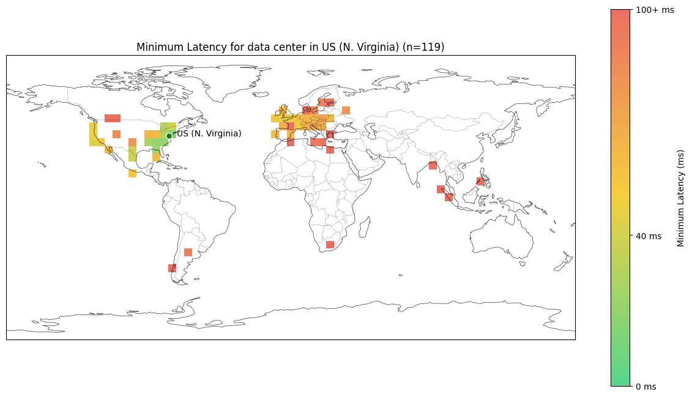
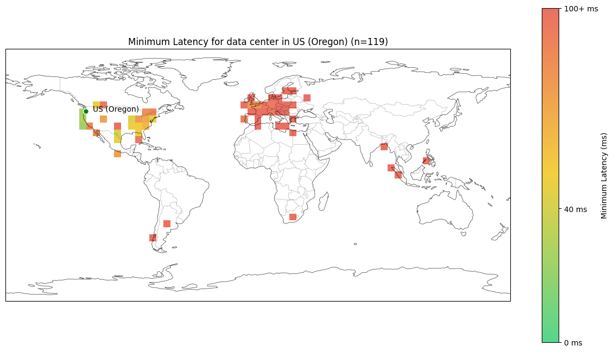

Information about a device's physical location can be inferred by measuring the time it takes for signals to travel between the device and a known server location. As the speed of light cannot be exceeded according to the known laws of physics, a maximum possible distance can be established with certainty, based on the signal latency. Multiple measurements to different servers establish circular areas of possible locations on the earth's surface which can then be intersected.
For more context on how this technology enables reliable online polls, see our article on IP-based polls as a proxy for popular opinion.
The process relies on the physical limitations of data transmission through the internet infrastructure:
Latency-based geolocation can help protect poll integrity by:
Successfully manipulating a poll which employs this method would require following efforts and resources:
Latency-based geolocation significantly raises the cost of manipulation attempts and can provide a high degree of poll integrity, if employed in conjunction with other measures, such as excluding known data center IP-addresses, CAPTCHA verification, and analysis of response patterns. Additionally, investigating complaints by potential victims whose residential IP-address appears to have been used for voting on a poll unbeknownst to them, can help to uncover manipulation attempts.
In our implementation, we added a few additional parts to make it work:
119 volunteers from different regions in the world, shared their actual GPS location with us and we measured the latency to the different servers. The results are available in the following plot for the latency to the different servers:
  The results show that latencies below 40 ms only occur in the rough location of the datacenter.
In the above described location inference, the reduced speed of light inside glass fibers is assumed, which is 2/3 that of the speed of light in vacuum or air. Therefore sending signals through the atmosphere or space may enable the manipulation of the apparent location to some degree. One conceivable approach might be to use long range radio signals travelling through the atmosphere over large distances. And another approach might be to use SpaceX's Starlink satellite infrastructure. Both could potentially be used to distribute the random number faster than using the conventional internet infrastructure. However, the complete exploitation of this approach would also require spoofing the IP-addresses of the distributed devices participating in the concerted manipulation attempt to appear as a single device. The use of HTTPS would further complicate the realisation of this manipulation approach. Nonetheless, with significant effort, it may be possible to alter the apparent location. A successful manipulation following this approach may however only shift the apparent location to a certain degree, as the speed of light in glass fibers is in the same order of magnitude as the speed of light in air or vacuum. Looking at further implementation hurdles, Starlink's satellites are typically in ~500 km altitude which slows the signal for short distances on the surface. Similarly the generation and reception of radio signals would likewise introduce additional latencies, which would require significant engineering efforts to be compensated for. And finally, for the successful manipulation of a significant poll, this approach would need to be applied to a large number of votes without being noticed. Considering the necessary resources and effort required, the manipulation approaches seem impractical for most polls, even if they carry a relatively high degree of societal impact and incentives for manipulation.
Network latency triangulation based geolocation is a method to determine the physical location of a device with a high degree of confidence. It can be used to detect when poll responses originate from outside the intended geographic region, and to provide an additional layer of verification beyond IP-address geolocation and IP-address reputation. For poll outcomes to be truly reliable, location measurements should be performed by multiple independent audited entities.